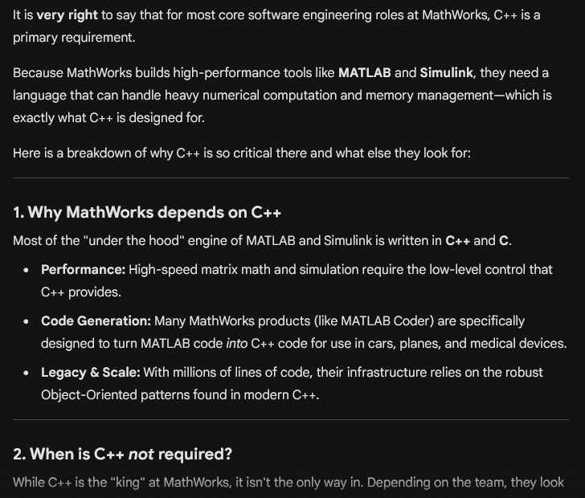
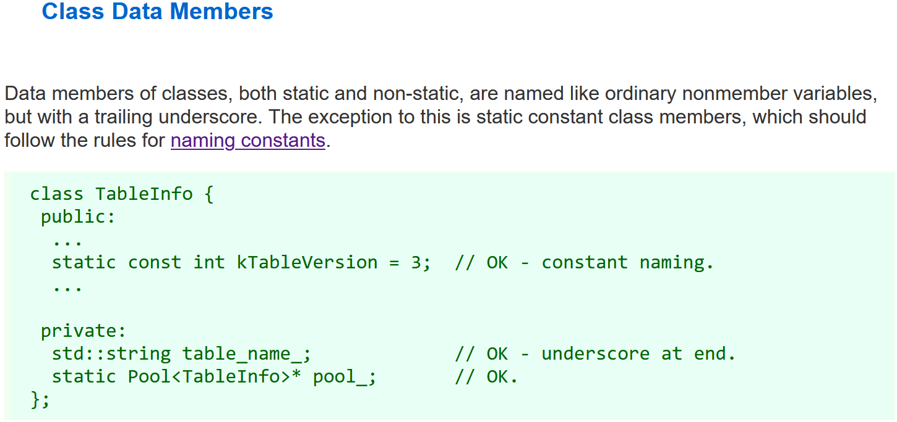

Object-oriented programming
Khiem Nguyen
Lecturer in Multiscale Materials
khiem.nguyen@glasgow.ac.uk
Why Object-Oriented Programming
Procedure programming vs Object-oriented programming
Up to now, we’ve been doing a type of programming called procedure programming. In procedure programming, the functions and the data those functions operate on are separate entities.
In object-oriented programming (OOP), the focus is on creating program-defined data types that contain both properties and a set of well-defined behaviors.
We won’t discuss why we need Object-Oriented Programming (OOP) in this course:
- We have all learned the importance of OOP in “Introductory Programming 2” and other programming courses.
- Since the 1990s, OOP has been the industry standard.
Instead, I walk you through some job posts in software engineer industry.
The dominance of OOP
- Why it’s popular: It mimics how we perceive the world – objects with properties and behaviors.
- Scalable: OOP makes it possible to manage large, complex systems where we need to “encapsulate” data to prevent bugs.
- The industry “lungs”: If you look at job postings or legacy codebases, OOP is everywhere.

You don’t need to know MATLAB to find a job in Mathworks. Instead, you need experience in C++ and OOP.
C++ is highly desired in industry
I asked Gemini about software engineering roles at MathWorks (developing MATLAB you use all the time.) 
C++ is highly desired in industry: Software architecture at Airbus

Git Control and OOP are essential skills in industry
Note the requirement of experience with Java. For your record, Java is a pure OOP programming language.

Why OOP: \(4\) key pillars of OOP
I hope this is more than enough to convince you why we need to learn Object-Oriented Programming, especially in C++.
✎ But that’s a very lazy explanation.
✎ There are four key pillars in Object-Oriented Programming
- Encapsulation
- Abstraction
- Inheritance
- Polymorphism
We shall quickly go through each of them, explain what they are and why they are.
Encapsulation
✎ Encapsulation is the practice of bundling data (variables) and methods (functions) that operate on that data into a single unit called class.
✎ It involves “hiding” the internal state of the object from the outside world to prevent accidental interference.
Example 1 Remember what you learned in Python:
ndarrayobject in NumPy libraryFigureobject is returned when you plotpyplot.plot(x, y)
Example 2 Think of this code snippet
a = np.array([1, 'two', 3]):- The interpreter tells you the error and exactly what kind of error you made.
- This is because there is a ton of checking behind the scene, and the user does not need to know.
Example 3 Think of registering a student at UoG (python):
Student(name="Bull Shit", age=7)- There must be some behind-the-scene checking, or otherwise mistakes can easily slip through.
- Inform the user that something is wrong.
Encapsulation
In C++, we use access specifiers to achieve this:
✎ private: Members are only accessible within the class.
✎ public: Members are accessible from outside the class.
- Example Think of a Bank Account
- You should not be able to change the
balancevariable directly from outside – otherwise, the bank is F___ed up. - You should have to use
deposit()orwithdraw()method that checks if the transaction is valid.
- You should not be able to change the
Encapsulation
Encapsulation enhances security.

Abstraction
✎ Abstraction is about simplifying things.
✎ It means showing only the essential features of an object and hiding the complex background details.

Abstraction
Why use abstraction
- Reduces complexity: We only deal with a high-level interface (from a user point of view)
- Easy Maintaince: We can change the internal “engine” of our code (from a developer point of view) without changing how other people use it.
- Example Think of a Coffee Machine:
- only need to know which button to press
- no need to understand the internal water pressure, size of grind bean, etc.
- Example We want to build a graphics app:
We want to “draw” different shapes, but the ways we draw a Circle and a Square are different.
We create an Abstract Class called Shape. It acts as a blueprint that says: “Anything that is a shape must have a
draw()method,
Encapsulation vs Abstraction
- Encapsulation is about protection and data integrity.
- Example Check if a
battery_levelis negative - Example Check if a
withdrawl_amountexeeds a balance
- Example Check if a
- Abstraction is about interface and simplification.
- Example Allow user to simply call
set_battery(50)without having to see theif (value < 0)logic hidden inside.
- Example Allow user to simply call
My own opinion:
- I try my best to find examples to illustrate these two points.
- Sometimes, I can get confused by myself.
- Some examples can sit at the intersection of both encapsulation & abstraction.
- Don’t worry if you get confused after this 🤨
Inheritance
✎ Inheritance allows us to create a new class (Derived class or Child class) based on existing class (Base class or Parent class).
✎ The child class “inherits” the attributes and behaviors of the parent, which helps us avoid writing the same code over and over again ➜ Don’t repeat yourself.
- Example An circle is an ellipse.
- A circle is an ellipse with the same length of two axes.
- If one can draw an ellipse, there is no point to copy/paste the code to draw a circle.
- Example Lecturer, Member of Teaching Office, Technician, Demonstrators are all Employee with names, age, salary, etc.
- combine all common features and behaviors for all kinds of Employee
- bundle these features and behaviors into Employee
- no need to repeat code for each kind of Employee
Polymorphism
Polymorphism allows an object to be treated as an instance of its parent class, but still behave according to its own specific type.
- Example We can have a list of different shapes and tell them all to
draw(), and they will each “know” how to draw themselves correctly. - We shall understand this pillar better when we reach this point.
struct vs class
Importance Note
In C++, the difference between a struct and a class is surprising small from a technical standpoint, but quite significant from a stylistic and architecture standpoint.
- Therefore, any example that is implemented using a struct could be implemented using a class, or vice-versa.
- However, from a practical standpoint, we use
structandclassdifferently.
struct vs class: Technical difference (defaults)
In C++, a struct and a class are almost identical, except for the default access level of their members and inheritance. That’s it!
Default Access Control
struct: Members (variables and functions) arepublicby defaultclass: Members areprivateby default
Default Inheritance
struct: Inheritspubliclyby defaultclass: Inheritsprivatelyby default
We shall study these concepts soon.
struct vs class: Google C++ style
Technically, you can use struct and class interchangably. Practically, we use them with different purposes. Google suggests
struct vs class: Google C++ style
Key points
- Use a
structonly for passive objects that carry data; everything else is aclass. - The
structandclasskeywords behave almost identically in C++. We add our own semantic meanings to each keyword, so you should use the appropriate keyword for the data-type you’re defining.
Defining a class: Syntax
Defining a class
- A class is a program-defined data type. Sometimes, you hear user-defined data type.
- Classes are defined similarly to structs: Classes are defined using the
classkeyword, structs using thestructkeyword.
Naming convention
✎ The prefix m_ is used to signify the member variables of a class.
✎ We discuss why member variables of a class are often prefixed with an m_ in upcoming lesson.
Naming convention: Google style
Naming convention: Which to choose
Several companies and wide industry have adopted the prefix
m_naming convention.Google suggests trailing underscore, such as
id_,age_, andwage_
✎ When we use the prefix m_ convention, the intelliSense will suggest variable names when we type m_.
Naming convention: Which to choose … and But
- The prefix
m_or the suffix_help us to avoid name shadowing in class constructors. - When you learn more about modern C++ (in our lectures actually), you soon recognize: we don’t even need the above naming conventions.
Conclusion:
- I would prefer not to use the prefix naming convention
m_in our lectures. - Saying that, sometimes I mix the convention
m_in on purpose (or maybe by forgetting).
A class can implement a struct
By declaring public member variables, a class behaves just like a struct.
class behaves like a struct by declaring member variables public. Filename=class_just_like_struct.cpp
#include <iostream>
class Date // we changed struct to class
{
public: // and added this line, which is called an access specifier
int m_day{}; // we can add "m_" prefixes to each of the member
int m_month{}; // names to avoid shadowing. But this is not really necessary
int m_year{}; // in modern C++.
};
void print_date(const Date& date)
{
std::cout << date.m_day << '/' << date.m_month << '/' << date.m_year;
}
int main()
{
Date date{ 4, 10, 21 };
print_date(date);
return 0;
}Most of the C++ standard library is classes
We have already been using class objects, perhaps without knowing it:
std::stringstd::string_viewstd::vector
In fact, most of the non-aliased types in the standard library are defined as classes!
Classes are really the heart and soul of C++ – they are so foundational that C++ was originally named “C with classes”!
Member functions and implicit objects
- In this Section, we shall use
structto demonstrate the concepts. - By using
struct, I can demonstrate thatstructandclassare technically almost the same.
Member functions
- In addition to having member variables,
classtypes (which includestruct,class,union) can have their own functions. - Functions that belong to a class type are called member functions.
- Functions that are not member functions are called non-member functions.
A non-member function example
Let us look at the following example:
non_member_function_example.cpp
#include <iostream>
struct Date
{
// here are our member variables
int year {};
int month {};
int day {};
};
void print(const Date& date)
{
// member variables accessed using member selection operator (.)
std::cout << date.year << '/' << date.month << '/' << date.day;
}
int main()
{
Date today { 2026, 02, 27 }; // aggregate initialize our struct
today.day = 16; // member variables accessed using member selection operator (.)
print(today); // non-member function accessed using normal calling convention
return 0;
}A member function example
In this lesson, we’ll use structs to show examples of member functions – but everything we show here applies equally well to classes.
member_function_example.cpp
// Member function version
#include <iostream>
struct Date
{
int year {}; // We don't use m_ here for struct. Generally, we don't
int month {}; // want to write constructor for struct. Then, there is
int day {}; // NO SHADOWING of variables (we talk later in `class`)
void print() // defines a member function named print
{
std::cout << year << '/' << month << '/' << day;
}
};
int main()
{
Date today { 2026, 02, 26 }; // aggregate initialize our struct
today.day = 16; // member variables accessed using member selection operator (.)
today.print(); // member functions also accessed using member selection operator (.)
std::cout << '\n';
return 0;
}Calling member functions and the implicit object
In the non-member example, we call
In the member example, we call
In the member function case, we don’t pass
todayas an argument.The object is implicitly passed to the member function.
The object that member function is called on is called implicit object
Assessing members inside a member function uses the implicit object
✎ In the non-member example, we define
✎ In the member example, we define
- We access the members as
year,month, andday. - Any member identifier that is not prefixed with the member selection operator (
.) is associated with the implicit object. year,month, andday(which are not prefixed) evaluate to the values oftoday.year,today.month, andtoday.dayrespectively.
A comparison to OOP in Python
class Date:
def __init__(self, year=2026, month=2, date=28): # we learn constructor in C++ soon
self.year = year
self.month = month
self.date = date
def print(self):
print(f"{self.year}/{self.month}/{self.date}") # we don't have self. in C++
# Use this class in global scope
today = Date(2026,2,26) # when this lecture first took place
today.print()
# How about this: I know that many of you did not learn it in
# Introductory Programming 2. I am cooler :D
Date.print(today) # exposes the implicit object in the statement today.print()A comparison to OOP in Python: Repeat last slide
class Date:
# blah blah
def print(self):
print(f"{self.year}/{self.month}/{self.date}") # we don't have self. in C++
# Use this class in global scope
today = Date(2026,2,26) # when this lecture first took place
today.print()
Date.print(today) # this exposes the implicit object in the statement today.print()- What we have just learned in C++ looks different from Python you know. We don’t have
self:self.year,self.month,self.day. - We shall learn an equivalence of
selfof Python in C++. - Statement
Date.print(today)exposes the implicit object in statementtoday.print()
A comparison to OOP in Python: But Python is not as serious as C++
#| error: true
class Date:
def __init__(self, year=2026, month=2, date=28): # we learn constructor in C++ soon
self.year = year
self.month = month
self.date = date
def print(self):
print(f"{self.year}/{self.month}/{self.date}") # we don't have self. in C++
# Use this class in global scope
today = Date(2026,2,26) # when this lecture first took place
my_name = "khiem"
Date.print(my_name) # SYNTAX Correct, but run time error. my_name.year does not existA comparison to OOP in Python: But Python is not as serious as C++
#| error: true
class Date:
def __init__(self, year=2026, month=2, date=28): # we learn constructor in C++ soon
self.year, self.month, self.date = year, month, date
def print(self):
print(f"{self.year}/{self.month}/{self.date}") # we don't have self. in C++
class Foo:
def __init__(self):
self.year, self.month, self.date = "one", "two", 3
# Use this class in global scope
today = Date(2026,2,26) # when this lecture first took place
foo_object = Foo()
# SYNTAX correct, and Code run fine too. But it is just nonsense
Date.print(foo_object) Member functions can be overloaded
✎ Just like non-member functions, member functions can be overloaded.
overload_member_functions.cpp
#include <iostream>
#include <string_view>
struct Date
{
int year {}; int month {}; int day {}; // Do not write like this! Save space for slide
void print() {
std::cout << year << '/' << month << '/' << day;
}
void print(std::string_view prefix) {
std::cout << prefix << year << '/' << month << '/' << day;
}
};
int main()
{
Date today { 2020, 10, 14 };
today.print(); // calls Date::print()
std::cout << '\n';
today.print("The date is: "); // calls Date::print(std::string_view)
std::cout << '\n';
return 0;
}Structs and member functions: A bit of history
- In C, structs only have data members, not member functions.
- While designing classes in C++, Bjarne Stroustrup considered whether structs (which were inherited from C) should be granted the ability to have member functions.
- Upon consideration, he determined that they should.
- In modern C++, it is fine for structs to have member functions.
✎ Both structs and classes are called class type
Const class objects and const member functions
✎ Again, we shall use struct for examples in this section.
Const variables: A quick revisit
We learn: All const variables must be initialized at time of creation
Similarly, class type objects can be made const using
constkeyword
Modifying the data members of const objects is disallowed
✎ Any attempt to modify the data members of the object is disallowed.
modify_members_of_const_objects.cpp
struct Date
{
int year {}, month {}, day {};
void increment_day() {
++day;
}
};
int main()
{
const Date today { 2020, 10, 14 }; // const
// today.day += 1; // compile error: can't modify member of const object
// today.increment_day(); // compile error: can't call member function that modifies member of const object
return 0;
}➥ Show the code with uncommented code. IntelliSense picked up the error before compilation.
Const objects may not call non-const member functions
✎ You may be surprised that the following code causes compilation error.
Const member functions
✎ To address the above issue, we make print() a const member function.
✎ A const member function is a member function that guarantees it will not modify the object or call any non-const member functions (as they may modify the object)
const_member_functions.cpp
#include <iostream>
struct Date
{
int year {}, month {}, day {};
void print() const // now a const member function
{
std::cout << year << '/' << month << '/' << day;
}
};
int main()
{
const Date today { 2020, 10, 14 }; // const
today.print(); // ok: const object can call const member function
return 0;
}Const member functions
✎ Not a surprise: A const member function that attempts to change a data member or call a non-const member function will cause a compiler error to occur.
const_member_functions_change_data_members.cpp
Const member functions can be called on non-const objects
✎ Not a surprise (again): Const member functions may also be called on non-const objects.
- We promise the compiler const member functions won’t change the data members.
- Indeed, non-const objects calling const member functions cannot break such promise.
Const member functions can be called on non-const objects
nonconst_objects_call_const_mem_functions.cpp
Const member functions can be called on non-const objects
A member function that does not (and will not ever) modify the state of the object should be made const, so that it can be called on both const and non-const objects.
Wait a minute: What a mess
- How am I supposed to remember all the const-ness thingys.
- I am not even Tony Stark or Spider Man.
So, I asked Gemini:
There are too many things to remember about making function const and making reference const in writing C++ code to deal with const objects. Can you please give me one or two single golden rule so that I remember what I should do?
Gemini answers me (I shortened it a bit):
If you are working with structs or classes, here are the two golden rules that will cover 95% of your needs.
✎ Rule 1 The “Read-Only” Rule (For Functions)
If a function does not change the object’s data, mark it const at the end.
Think of it as a promise to the compiler.
✎ Rule 2 The “Efficient Pass” Rule (For Parameters)
Always pass objects by const & (const reference) unless they are tiny or we need to modify its value.
➥ Let us combine both rules into one example
Const objects via pass by const reference
Recap:
- Passing a class type argument by value causes a copy of the class to be made – which is slow.
- Passing by reference avoids making a copy.
Note
- Note that modifying the argument’s value is not the key point. It is a side effect.
- If we add
constqualifier, we cannot modify the arguments’ value. - Of course, we wish to modify the argument’s value in reasonable cases.
Another Note
- Instantiating const local variables is one way to create const objects
- Another common way to get a const object is by passing an object to a function by const reference. But, this only holds from the perspective of that function.
Const objects via pass by const reference
Question What’s wrong with the following code?
const_objects_via_pass_by_const_ref_01.cpp
#include <iostream>
struct Date
{
int year {}, month {}, day {};
void print() { // non-const
std::cout << year << '/' << month << '/' << day;
}
};
void do_something(const Date& date) {
date.print();
}
int main()
{
Date today { 2020, 10, 14 }; // non-const
today.print();
do_something(today);
return 0;
}➥ Compile the file and show the code in VSCode.
Const objects via pass by const reference
Yup, the fix is simple: make print() const
print() const. Filename=const_objects_via_pass_by_const_ref_01.cpp
#include <iostream>
struct Date
{
int year {}, month {}, day {};
void print() const { // non-const
std::cout << year << '/' << month << '/' << day;
}
};
void doSomething(const Date& date)
{
date.print();
}
int main()
{
Date today { 2020, 10, 14 }; // non-const
today.print();
doSomething(today);
return 0;
}